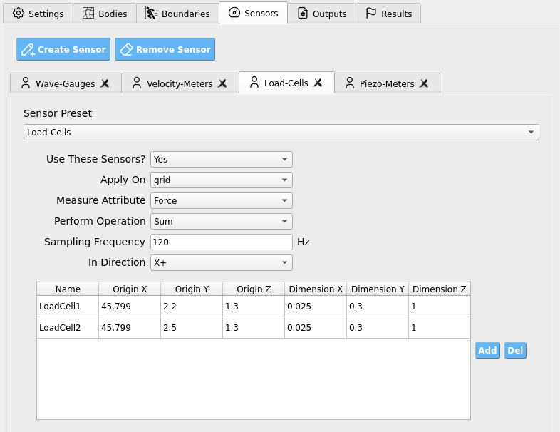

Sensors
Sensors measure physical quantities (force, pressure, position, velocity, etc.) during a simulation. Conceptually, a sensor maps the evolving solver state within a specified spatial domain to a scalar value. Sensors apply a reduction operation (e.g., Max, Average, Sum) over all particles or grid-nodes inside their domain.
{kind=link}

The GUI provides four predefined sensor groups (you may add custom ones as needed):
A wave-gauge: a slender vertical column that records particle vertical position and outputs the Max value → approximates free-surface elevation.
A velocimeter: averages particle or grid-node velocity within its domain.
A load-cell: sums force contributions on a rigid boundary in a chosen direction.
A piezometer: averages particle pressure within its domain.
Global Sensor Controls
These controls appear for each sensor group.
Setting |
What it does |
Notes |
|---|---|---|
Use These Sensors? |
Enables/disables the entire sensor group. |
Toggle Yes/No. |
Apply On |
Chooses the numerical entity to sample. |
Particles or Grid-Nodes. (Load-cells typically use grid-nodes; gauges/piezometers often use particles.) |
Measure Attribute |
Selects the field to record from each entity. |
e.g., |
Perform Operation |
Reduction/aggregation over all sampled entities. |
Max, Min, Sum, Average, Count. |
Sampling Frequency |
How often to record (Hz). |
|
In Direction |
For vector quantities, restrict/resolve to a direction. |
e.g., X+, X-, Y+, Y-, Z+, Z-. |
Tip
Match Sampling Frequency to the physical device you are emulating (e.g., wave-gauge or load-cell). Typical lab instrumentation ranges from a few Hz to hundreds of Hz.
Warning
Extremely high sampling (e.g., 100000 Hz) can create I/O bottlenecks
and slow the simulation substantially.
Sensor Geometry (Per-Row Table)
At the bottom of the tab, a table defines individual sensor volumes for the group. Add or delete rows to create/remove sensors.
Origin defines one corner of an axis-aligned box.
Dimensions define the extent from that origin in each axis.
Note
Create a slender vertical box for wave-gauges (small X/Z, tall Y). For velocimeters/piezometers, use a volume that represents the region of interest. For load-cells, align sensor boxes with the face of the rigid structure and use In Direction to select the face-normal.
Important
For Load-Cells, ensure the number of rows (sensors) matches the number of mappable OpenSees nodes so the SimCenter workflow can correctly map force histories from ClaymoreUW to your structural model.
Recommended Setups
Wave-Gauge (free surface proxy): - Apply On: Particles - Measure Attribute: Position_Y - Perform Operation: Max - Geometry: slender vertical column spanning expected water depth.
Velocimeter: - Apply On: Particles (or Grid-Nodes, depending on need) - Measure Attribute: Velocity_[X|Y|Z] - Perform Operation: Average - Geometry: small box centered where you want the velocity sample.
Load-Cell (structure face): - Apply On: Grid-Nodes - Measure Attribute: Force - Perform Operation: Sum - In Direction: face normal (e.g., X+ toward the structure) - Geometry: thin box coincident with the structure’s wetted face.
Piezometer: - Apply On: Particles - Measure Attribute: Pressure - Perform Operation: Average - Geometry: vertical column or small volume near the point of interest.
Best-Practice Guidance
Axis alignment: Align sensor boxes with expected flow/structure features to reduce ambiguity in direction selection.
Direction choice: For vector fields (e.g., Force, Velocity), choose In Direction to isolate the physically relevant component (e.g., normal-to-face load).
Resolution vs. cost: Many small sensors cost more to evaluate than a few well-placed ones at the same sampling rate; start minimal and refine.
Validation passes: Begin with moderate sampling (e.g., 10-60 Hz) and adjust after inspecting spectra and peak capture.
Consistency with scaling: If using similitude scaling elsewhere, remember sensor outputs report in the current (scaled) unit system.
Warning
If a load-cell time history shows unexpected signs or magnitudes, verify: (1) the sensor box resides exactly on the intended face, (2) In Direction matches the face normal, and (3) structure/sensor alignment did not change during motion.